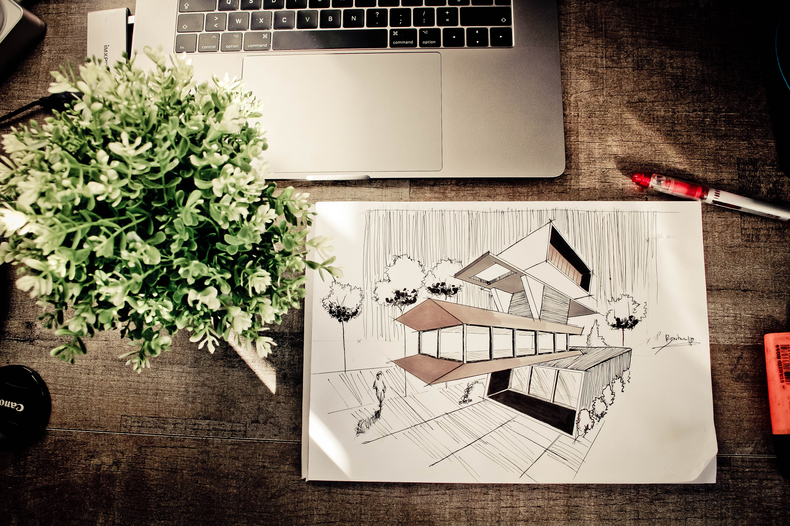
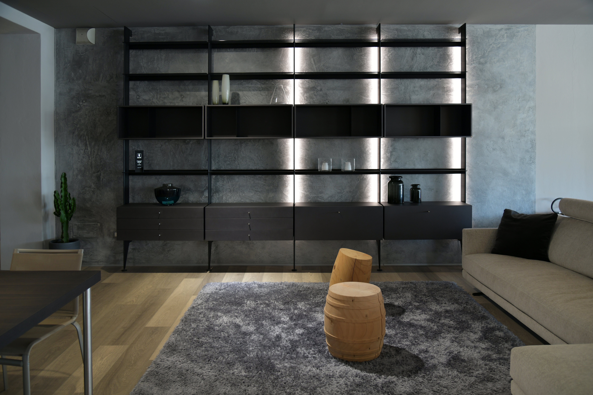
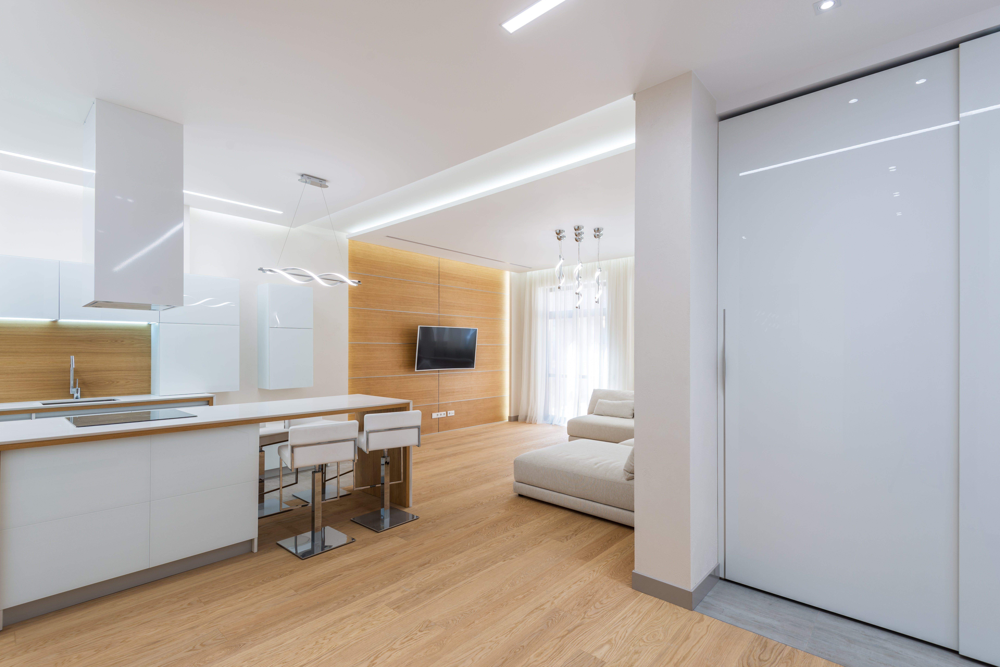
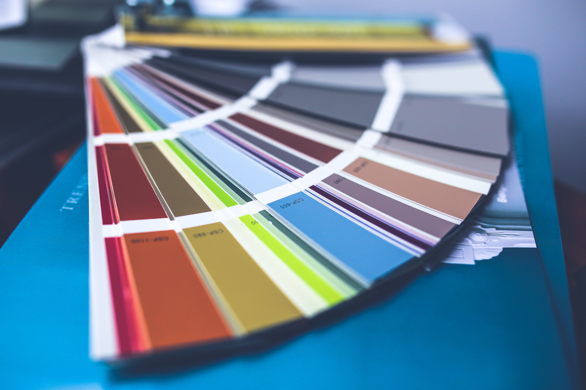

IMPERIAL ARCHITECT
Waldo Balvin
WDD 130
Overview
Purpose
The purpose of Imperial Architects is to turn dreams into realities by creating exceptional architectural spaces that blend innovation with aesthetics, providing functional and sustainable solutions that enrich people's lives and enhance the built environment. Our passion for design and excellence in execution drives us to exceed our clients' expectations, contributing to the development of more beautiful and livable communities.
Audience
The target audience for Imperial Architects includes property developers, homeowners, businesses, and organizations seeking innovative architectural solutions that prioritize aesthetics, functionality, and sustainability. We cater to those who value quality design and are looking to transform their spaces into inspiring, practical, and environmentally-conscious environments.
Branding
Website Logo

Style Guide
Color Palette
Palette URL:
https://coolors.co/006d77-83c5be-edf6f9-ffddd2| Primary | Secondary | Accent 1 | Accent 2 |
|---|---|---|---|
| [#006d77] | [#83c5be] | [#edf6f9] | [#ffddd2] |
Typography
Heading Font: [Font Name here]
Paragraph Font: [Font Name here]
Normal paragraph example
Welcome to Imperial Architects, where architectural dreams come to life, and innovation meets aesthetics to shape the world around us. Whether you're a homeowner envisioning a dream residence, a business seeking a cutting-edge workspace, or a developer crafting the next iconic landmark, our website is your gateway to a world of architectural excellence.

Why People Will Come to Our Site:
People will flock to our site for a myriad of reasons.
First and foremost, Imperial Architects stands as a beacon of inspiration for those seeking
unparalleled architectural design. Whether you're embarking on a residential project,
commercial venture, or community development, our portfolio showcases a diverse range of projects
that exemplify our commitment to quality and creativity.
Visitors to our site will find a wealth of information,
from case studies of our past projects to insights on the latest architectural trends.
Whether you're looking for a seasoned architect to bring your vision to life or simply
seeking inspiration for your next project,
Imperial Architects is the destination for all things architectural.

Colored paragraph example
Questions Visitors Expect Our Site to Answer:
What is Imperial Architects known for? - Our website will provide an overview of our expertise, showcasing the types of projects we excel in and the unique approach we bring to each endeavor. Can I see examples of your past work? - Our portfolio, easily accessible on the site, will serve as a visual testament to the quality and diversity of our architectural projects.

How can I contact Imperial Architects?
- Clear and user-friendly contact information will be readily available, ensuring that potential clients can easily get in touch with our team. What architectural services does Imperial Architects offer? - A comprehensive breakdown of our services, from conceptualization and design to project management, will be outlined, providing a holistic understanding of what we bring to the table.
Activities Visitors Will Want to Complete:
Exploring Our Portfolio: Visitors will spend time immersing themselves in our portfolio, gaining insights into our design philosophy and capabilities. Contacting Us: Whether through a contact form or direct email/phone contact, visitors will want a straightforward way to reach out to our team for inquiries or consultations. Staying Informed: Architecture enthusiasts, developers, and potential clients will likely subscribe to newsletters or follow our blog for regular updates on industry trends, project spotlights, and architectural insights.
 Information Necessary for Site Actions:
Contact Information: Clear and accessible contact details, including email addresses and phone numbers, are crucial for visitors looking to engage our services. Project Descriptions: Detailed descriptions of our past projects, including challenges faced and innovative solutions implemented, will provide visitors with a deeper understanding of our capabilities. Service Offerings: A breakdown of our architectural services, from initial concept design to construction management, will be essential for clients looking to engage us for specific project phases.
Why Visitors Will Choose Our Site:
Imperial Architects distinguishes itself through a combination of innovation, expertise, and a commitment to realizing clients' visions. Our website stands out by offering: Inspiration and Expertise: Our portfolio and blog content will provide a valuable resource for individuals and businesses seeking inspiration and architectural knowledge. Transparency: Clear and concise information, coupled with an easy-to-navigate website, ensures that visitors can quickly find the information they seek. Proven Track Record: A showcase of successful past projects demonstrates our ability to turn architectural visions into reality, instilling confidence in potential clients.
Navigation
Site Map
Wireframes
Home

Projects

Blog